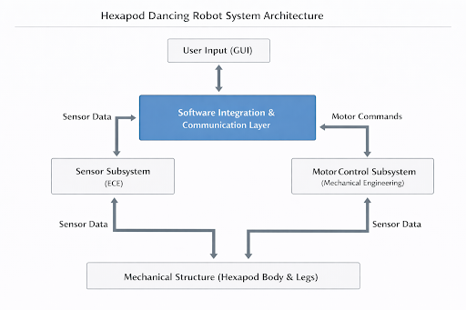

Project At A Glance
Team 6 built a large hexapod performance robot that brings together six-legged actuation, embedded control, simulation, onboard perception, and a user-friendly browser dashboard. The project goal is a safe, modular robot platform for walking and dance-like motion demos.
The final architecture uses 18 high-torque servo channels across six 3-DOF legs, an ESP32 for low-level control, and a Raspberry Pi 5 for inverse kinematics, calibration, vision, and operator-facing tools.

Final Status Snapshot
Final Integrated Build
Six legs, power distribution, embedded control, Pi compute, camera hardware, and dashboard tooling were integrated for the April demos.
Operator Workflow
The browser dashboard supports runtime control, manual motion, calibration, camera inspection, auto mode, and dance sequence work.
Motion Outcome
Six-leg IK actuation works; reliable body translation remains unresolved and is detailed on the Performance page.
Submission Archive
Proposal files, ILRs, Check 3 links, implementation media, and open final-report placeholders are organized for grading.
Where To Look Next
System Design
Why the team chose this architecture, including requirements, subsystem partitioning, and trade studies.
Implementation
What was built across mechanical assembly, electrical power, embedded control, software, dashboard, and vision.
Performance
How well the final system worked, including the formal requirement matrix and remaining gaps.
Media
Demo clips, robot photos, dashboard screenshots, simulation GIFs, and hardware evidence.
Management
Schedule, demo milestones, procurement snapshot, and integration issue log.
Documents
Submission archive for proposal files, ILRs 1 through 9, Check 3 materials, and pending final artifacts.